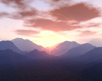

- Welcome to Touhou Wiki!
- Please register to edit. For assistance, check in with our Discord server or IRC channel.
Gensokyo
Gensokyo Gensoukyou, Gensoukyo, Gensōkyō, Eastern Country | |
|---|---|
|
 Gensokyo landscape from the opening sequence of Scarlet Weather Rhapsody
| |
| Location |
Said to be located around the Yatsugatake Mountains in Japan. |
Appearances | |
| Official Games | |
| |
| Print Works | |
| |
| Music CDs | |
| |
| Other | |
| |
Gensokyo (幻想郷 gensoukyou[1], "Land of Illusions" or "Land of Fantasy") is the fictional land in which the entire Touhou Project takes place. Its culture vaguely resembles that of feudal Japan, with a lot of folktale elements added on.
Contents
General Information[edit]
Gensokyo was originally a desolate, haunted region of Japan ages ago. The youkai that lived there began to terrorize the surrounding lands, and thus powerful, heroic humans were sent to exorcise and exterminate them. The off and on battle between humans and youkai continued on until 1885 A.D., when Gensokyo was sealed off from this increasingly scientific and skeptical world with the creation of the Great Hakurei Barrier. There has been little contact between those societies ever since. Today, the only known gateway between Gensokyo and this world is the Hakurei Shrine, which stands in isolation along the border on distant mountains of the far east. It's known that the local language spoken in Gensokyo is modern Japanese[1].
Gensokyo is populated mainly by youkai, but a decent human and rabbit population lives there as well. Some of its inhabitants went there to hide, to escape, to find shelter when no-one and nowhere else would accept them. Many of them just like the natural darkness.
Geography[edit]
Gensokyo, the area encompassed by the Great Hakurei Barrier, is a landlocked territory comprised mainly of forested mountains. Notable geographic features include the Youkai Mountain with communities of kappa at its base, tengu at its peak, and the Moriya Shrine at a lake near the top; the Forest of Magic; the Bamboo Forest of the Lost where Eientei is located; the Misty Lake next to the Scarlet Devil Mansion; the Human Village and adjacent Myouren Temple, which are assumed to be in a fertile valley; the Sanzu River separating Gensokyo from Higan; and the Hakurei Shrine at the east of Gensokyo.
Although passing through the Hakurei Barrier to the Outside World is virtually impossible for anyone besides Yukari Yakumo, it's significantly easier for Gensokyo denizens to access domains of gods, demons, and spirits which aren't strictly part of Gensokyo itself. These include Higan, the Netherworld, Makai, Heaven, Senkai and the Underworld.
The fourth chapter of Cage in Lunatic Runagate reveals that the Youkai Mountain preserves the original appearance of Mount Yatsugatake before Konohana-Sakuyahime, the goddess of Mount Fuji, tore it down out of jealousy. In the outside world today, the remnants of the mountain can be seen as the Yatsugatake mountain range in Yatsugatake-Chūshin Kōgen Quasi-National Park between Nagano and Yamanashi Prefectures, providing a possible indication of where Gensokyo would be located in Japan. Lake Suwa (諏訪湖 Suwa-ko) and Mount Moriya, which Suwako Moriya was named after, are located nearby.
Creatures[edit]
Creatures of all shapes and sizes inhabit the world of Gensokyo, most drawing inspiration from Japanese legends and folklore.
Humans are one of the major populations in Gensokyo. Youkai essentially make up the rest, though "youkai" tends to be an umbrella term, and essentially can be used to encompass everything non-human. Many youkai are sub-classified into other races, such as devils, magicians, vampires, fairies, kappa, oni, and many more.
Many types of spirits also inhabit the world, such as Ghosts, Poltergeists, Evil spirits, Divine spirits, a number of Tsukumogami, and apparitions.
Items[edit]
Many unusual items exist in Gensokyo, of which quite a few are based in Japanese mythology in one way or another. However, given Gensokyo's nature as a "land of that which is forgotten", even more modern items that have fallen out of style for a long time (such as the Game Boy) have occasionally turned up. Many of these "new" items appear near Muenzuka, and both Rinnosuke Morichika and Nazrin are said to have picked up various objects there.
In addition to the unusual items floating in, many goods are the same as those from old Japan. Goods like black tea and coffee are considered to be a luxury.[2]
Media[edit]
There are two known sources of media in Gensokyo: the Bunbunmaru Newspaper, written and edited by Aya Shameimaru; and the Kakashi Spirit News, by Hatate Himekaidou. The former seems to be far more popular, however, with its sometimes loose depictions of reality.
Timeline[edit]
Gensokyo exists roughly parallel to the real world. There does, however, appear to be at least a few decades worth of a "time lag" between the two, as shown by hints and implications at major outside events happening. As the inhabitants of Gensokyo, however, have developed their spiritual lives instead of following the trend of technological advancements in the real world, Gensokyo itself can appear to be a Japan from hundreds of years ago.
Gensokyo's Appearances[edit]
Windows Games[edit]
- Immaterial and Missing Power
There is a stage in Immaterial and Missing Power dedicated to Suika Ibuki that's simply titled 'Gensokyo'. Stood on a spirital floor, it appears to be located just above the Hakurei Shrine and it has a giant Moon in the background. It's the location for the final stage of each character's scenario.
Gensokyo in other Canon works[edit]
PC-98[edit]
The setting of the PC-98 games was initially called The Eastern Country (東の国 Azuma no kuni). However, the name Gensokyo has been used as the name of the universe in Mystic Square,[3] and was previously used in Lotus Land Story as part of the game's title. ZUN has confirmed it to be the same Gensokyo as in the Windows games.[4]
The PC-98 world isn't as clearly defined, but it has some notable locations - including the Human Village and the Hakurei Shrine. Other worlds bordering the Eastern Country include Makai, the Fantasy World, Mugenkan and Reimaden, with their borders set behind the mountain which the Hakurei Shrine sits at the foot of. Oddly, there's also a modern American diner.[5]
Seihou[edit]
- Note: This section is part of the Seihou Project by the Doujin circle "Shunsatsu sare do?".
It's never stated what kind of world Reimu Hakurei and Marisa Kirisame are from, as it's referred to as simply "the East" (東). From there, it's presumed that VIVIT travelled down the Silk Road towards the Hakurei Shrine to find the Holy Grail, where she bumps into the said two characters.
It was shown that a large amount of vegetation existed in the East compared to the extinct vegetation on Seihou World's Earth's apart from cacti. In respect to this, Touhou's Dolls in Pseudo Paradise had a statement that may indicate that the Great Hakurei Barrier also existed during this game as it does in the Windows canon of the Touhou Project. It also has a statement that may indicate VIVIT saying "Oh, that girl... doesn't look like a human nor a youkai."
Uwabami Breakers[edit]
- Note: This section is part of the game Uwabami Breakers by the Doujin circle The Drinking Party.
In Uwabami Breakers, Isami Asama heard a story that if you drink at the Twilight Bar Room until morning, you'd see "A mysterious world of curtain fire," referring to Gensokyo. Also, it's presumed that the Twilight Bar Room is located in the outside world.
Project Blank[edit]
- Note: This section is part of Project Blank by the Doujin circle RebRank.
Gensokyo may have been referenced in Project Blank's first game Samidare, where C23 encounters Yuki and Mai in the 3rd area of the Extra stage, with normal enemies as bakebake and the background has a resemblance of a Shinto theme.
Further Reading[edit]
- Perfect Cherry Blossom: Prologue
- Strange Creators of Outer World Vol.1: Basic Knowledge of Fantastic Words 2015
Notes[edit]
^ Though "Gensoukyou" or "Gensōkyō" are considered correct, it is spelled "Gensokyo" in Perfect Cherry Blossom's Phantasm Stage while "Gensoukyo" is used on The Grimoire of Marisa's back cover.
References[edit]
- ↑ Imperishable Night: Barrier Team's Scenario
- ↑ Curiosities of Lotus Asia - Chapter 4.
- ↑ Mystic Square/Music - Sara's theme
- ↑ ZUN's AWA Q&A Panel
- ↑ Story of Eastern Wonderland – Reimu A's Ending
| ||||||||||||||||||||||||||||||||||||||||
| |||||||||||||||||||||||||||||||||||